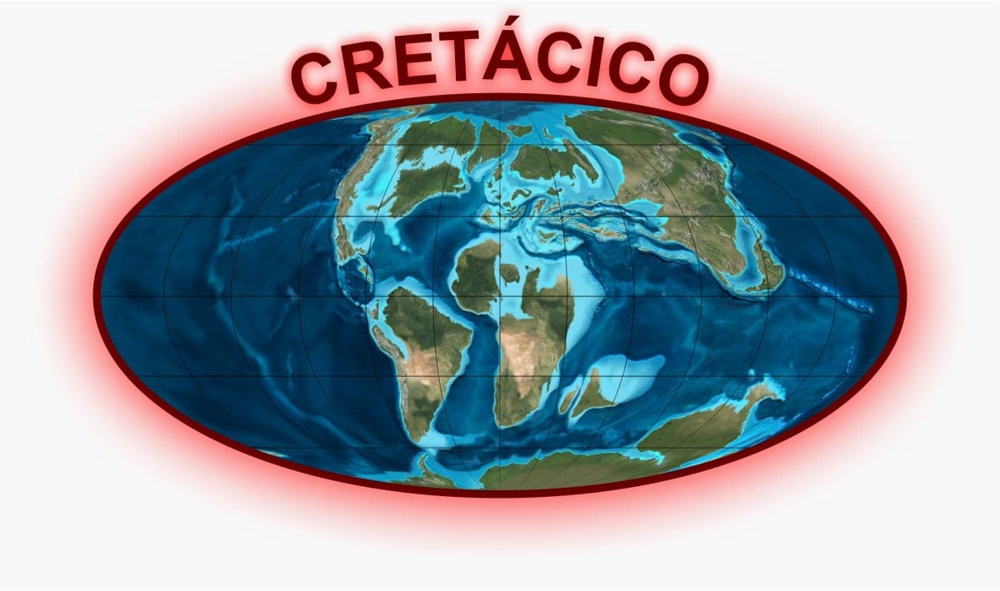
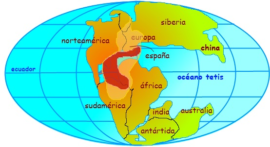

EL MESOZOICO
El Mesozoico es la segunda era y eratema del eón y eonotema Fanerozoico de la escala temporal geológica. Anteriormente también era conocida como Secundario, era secundaria, era de los dinosaurios o, botánicamente, como era de las cícadas. Sucede al Paleozoico y precede al Cenozoico, de ahí su nombre, que procede del griego meso, que significa 'entre', y zōon, que significa 'de los animales', lo cual en conjunto se interpreta como 'vida intermedia'. Se inició hace unos 252 millones de años y finalizó hace 66 millones de años.
Durante los 185 millones de años que duró, no se produjeron grandes episodios orogénicos. Pangea se fragmenta gradualmente y los continentes van desplazándose hacia su posición actual. El clima fue excepcionalmente cálido durante toda la era, desempeñando un papel importante en la evolución y la diversificación de nuevas especies animales.
Los invertebrados característicos de este período fueron los amonites, cefalópodos de fragmocono con forma espiral, y los belemnites, más pequeños y con el rostro interno, alargado y puntiagudo, además de equinodermos, braquiópodos y crustáceos. Se desarrollaron ampliamente los vertebrados, sobre todo los reptiles. En esta era aparecen también los mamíferos, las aves y las angiospermas o plantas con flores. Sin embargo, los dinosaurios no son los únicos animales que prosperaron durante toda esta era; también los peces y otros reptiles, como las tortugas —un ejemplo es Archelon— o los cocodrilos, de los que algunos alcanzaron gran tamaño.
Division
1. Triásico (252–201 millones de años)
Reorganización de la vida tras la extinción del Pérmico, en la que desapareció alrededor del 90% de las especies marinas y el 70% de las terrestres.
Surgimiento de los primeros dinosaurios, que en este momento eran pequeños y bípedos, como el Eoraptor.
Aparecen también los primeros mamíferos verdaderos, descendientes de reptiles sinápsidos.
Pangea, el supercontinente, dominaba la Tierra, rodeado por un único océano global: Panthalassa.
El clima era en su mayoría seco y árido, con grandes desiertos en el interior continental.
Evolución de los primeros reptiles marinos como los ictiosaurios y notosaurios.

2. Jurásico (201–145 millones de años)
Se produce una gran diversificación de dinosaurios, tanto herbívoros como carnívoros. Ejemplos notables: Brachiosaurus, Diplodocus, Allosaurus.
Aparecen los primeros pájaros verdaderos, como el famoso Archaeopteryx, que representa una transición entre dinosaurios terópodos y aves modernas.
Desarrollos importantes en la flora: proliferan gimnospermas como las coníferas, cícadas y ginkgos.
El clima se vuelve más húmedo y templado, permitiendo la expansión de vastos bosques.
Separación gradual de Pangea en dos grandes masas continentales: Laurasia (al norte) y Gondwana (al sur).
Dominio de reptiles marinos como los plesiosaurios y grandes ictiosaurios, y aparición de los primeros pterosaurios voladores.

3. Cretácico (145–66 millones de años)
Desarrollo de las angiospermas, las primeras plantas con flores, lo que trajo consigo cambios significativos en los ecosistemas terrestres y la evolución de insectos polinizadores.
Máxima diversificación de los dinosaurios, incluyendo especies famosas como el Tyrannosaurus rex, Triceratops, Velociraptor y Spinosaurus.
Aparecen mamíferos más avanzados, aunque aún de pequeño tamaño, generalmente nocturnos y con dieta insectívora.
Continúa la fragmentación de los continentes, lo que da lugar a configuraciones más cercanas a las actuales.
Los océanos se llenan de vida: amonites, belemnites, tiburones primitivos y nuevos tipos de peces óseos.
Al final del período, ocurre la extinción masiva del Cretácico-Paleógeno, probablemente causada por el impacto de un gran asteroide en la actual península de Yucatán, combinado con intensas actividades volcánicas (traps del Decán). Esta extinción eliminó a los dinosaurios no avianos, amonites, reptiles marinos y muchas otras formas de vida.
La era Mesozoica fue una época de innovación evolutiva, de grandes transiciones ecológicas y geológicas. Representa el periodo en el que muchos de los linajes modernos de animales y plantas tuvieron su origen. También sentó las bases de la paleogeografía actual, al comenzar el proceso de dispersión continental que culminó en la formación de los océanos y continentes actuales.
La extinción masiva al final del Cretácico no solo marcó el fin de los dinosaurios no avianos, sino que abrió paso a la era Cenozoica, dominada por mamíferos y aves, y en la que surgiría eventualmente el ser humano.